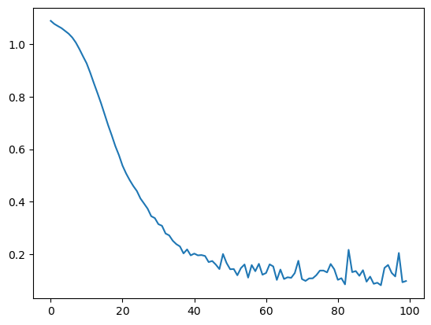

# importing packages
import torch
import torch.nn as nn
import torch.nn.functional as F
import torch.optim as optim
from torch.utils.data import DataLoader, Dataset
from sklearn import datasets
from sklearn.decomposition import PCA
from sklearn.model_selection import train_test_split
# defining NN
"""
class Net(nn.Module):
def __init__(self, inp, hl1, hl2, hl3, out):
super(Net, self).__init__()
# an affine operation: y = Wx + b
self.fc1 = nn.Linear(inp, hl1)
self.fc2 = nn.Linear(hl1, hl2)
self.fc4 = nn.Linear(hl2, hl3)
self.fc5 = nn.Linear(hl3, out)
self.s = nn.Sigmoid()
def forward(self, x):
x = F.relu(self.fc1(x))
x = F.relu(self.fc2(x))
x = F.relu(self.fc4(x))
x = self.fc5(x)
x = self.s(x)
return x
"""
class Net(nn.Module):
def __init__(self, layer_sizes):
super(Net, self).__init__()
self.layers = nn.ModuleList()
self.num_layers = len(layer_sizes) - 1
# Create hidden layers
for i in range(self.num_layers):
self.layers.append(nn.Linear(layer_sizes[i], layer_sizes[i+1]))
# output layer
self.layers.append(nn.Sigmoid())
def forward(self, x):
for i in range(self.num_layers):
x = torch.relu(self.layers[i](x))
return xlayer_sizes = [4, 30, 20, 10, 3] # Input size, hidden layer sizes, output size
net = Net(layer_sizes)
netNet(
(layers): ModuleList(
(0): Linear(in_features=4, out_features=30, bias=True)
(1): Linear(in_features=30, out_features=20, bias=True)
(2): Linear(in_features=20, out_features=10, bias=True)
(3): Linear(in_features=10, out_features=3, bias=True)
(4): Sigmoid()
)
)optimizer = optim.SGD(net.parameters(), lr=0.01)
criterion = nn.CrossEntropyLoss()# defining dataset
class MyDataset(Dataset):
def __init__(self, x, y):
self.x = x
self.y = y
def __len__(self):
L = self.x.shape[0]
return L
def __getitem__(self, i):
return (self.x[i, :], self.y[i])# getting data
iris = datasets.load_iris() # all data
data = torch.from_numpy(iris.data).float() # splitting into data tensors (X)
target = torch.from_numpy(iris.target).long() # and target tensors (Y)
# splitting dataset into training and testing groups
trainX, testX, trainY, testY = train_test_split(data, target, test_size=0.1, random_state=42)
# X is data/attributes
# Y is targets/labels
# making data a Dataset object
trainDataset = MyDataset(trainX, trainY)
testDataset = MyDataset(testX, testY)
# putting Dataset into Loader
trainLoader = DataLoader(trainDataset, batch_size=8, shuffle=True)
testLoader = DataLoader(testDataset, batch_size=4, shuffle=True)# training NN
nepochs = 100
epoch_loss = []
for epoch in range(nepochs):
iter_loss = 0
for i, (bX, bY) in enumerate(trainLoader):
optimizer.zero_grad() # zero the gradient buffers
output = net(bX)
loss = criterion(output, bY)
loss.backward()
optimizer.step()
#print(f'iteration {i}: loss {loss.item()}')
iter_loss += loss.item()
epoch_loss.append(iter_loss/(i+1))
# print(f'epoch {epoch}: loss {iter_loss/(i+1)}')
# print(loss)epoch_loss[1.089932595982271,
1.0780915232265698,
1.0698856536079855,
1.0620966939365162,
1.051463221802431,
1.0407792960896212,
1.0263941287994385,
1.006874662988326,
0.9818673975327435,
0.9543773672159981,
0.9278924991102779,
0.892082112676957,
0.8528847378842971,
0.8151910129715415,
0.7762638295398039,
0.7339987334083108,
0.6915121253798989,
0.6529985280597911,
0.6120010228718028,
0.577684718019822,
0.537588391233893,
0.5076155101551729,
0.48230401382726784,
0.45989446254337535,
0.44066135672961965,
0.4121406087104012,
0.3928568380720475,
0.3732422344824847,
0.3446122083593817,
0.33735772266107444,
0.3142062723636627,
0.3080035522580147,
0.2785126128617455,
0.2714738609159694,
0.25107884670005126,
0.2379030300413861,
0.22928375860347466,
0.2026286813266137,
0.2178823264206157,
0.19517485665924408,
0.20197849501581752,
0.1951888777753886,
0.19636180690106222,
0.19281140714883804,
0.16958910445956624,
0.17367594732957728,
0.15995553683708696,
0.14281793201670928,
0.20035550633774085,
0.1659274809062481,
0.1421836890718516,
0.14311273231664123,
0.119171392172575,
0.14668690128361478,
0.16042900331975782,
0.1102606740725391,
0.1581820836838554,
0.13461540573660066,
0.16296004821710727,
0.1213293199920479,
0.12789003748227568,
0.16090759580187938,
0.1529751457821797,
0.10146084499052342,
0.14100522230214932,
0.1049810720826773,
0.11155775633147534,
0.10951150008751188,
0.12753714467672742,
0.17456571779706898,
0.10472052445744767,
0.09768917438957621,
0.10721259117674302,
0.10751658004215535,
0.11949179442051579,
0.13707306488033602,
0.13714948592378812,
0.1302530608304283,
0.1622128228602164,
0.1422118198893526,
0.10186021829790928,
0.10798571625834003,
0.0845348046928206,
0.21633452007218318,
0.13113987621139078,
0.13525098699199803,
0.11727344157064662,
0.138534656534081,
0.09484674929476836,
0.11408404238960322,
0.08664089983657879,
0.09082044567912817,
0.08115927672342342,
0.1474215361454031,
0.15857262180789428,
0.12826845986659036,
0.11472896952182055,
0.2042937748517622,
0.09265142229988295,
0.09727475545643006]import matplotlib.pyplot as plt
plt.plot(epoch_loss)
# testing NN
print("testing")
optimizer.zero_grad()
output = net(testX)
print(testX.shape)
loss = criterion(output, testY)
print(loss)
# print(output)testing
torch.Size([15, 4])
tensor(0.1146, grad_fn=<NllLossBackward0>)# analyzing and printing results
preds = []
for row in output:
if row.max() == row[0]:
preds.append(0)
elif row.max() == row[1]:
preds.append(1)
else:
preds.append(2)
tPreds = torch.tensor(preds).view(15,1)
tTargets = testY.view(15,1)
result = torch.cat([tPreds,tTargets], dim=1)
print(result)
correct = 0
for row in result:
if row[0] == row[1]:
correct += 1
print(correct)tensor([[1, 1],
[0, 0],
[2, 2],
[1, 1],
[1, 1],
[0, 0],
[1, 1],
[2, 2],
[2, 1],
[1, 1],
[2, 2],
[0, 0],
[0, 0],
[0, 0],
[0, 0]])
14